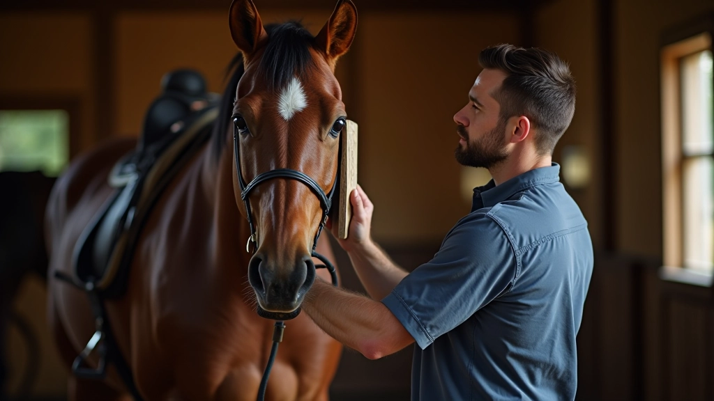

برنامج تدريبي
برنامج أساسيات العناية بالحصان
برنامج تدريبي شامل يغطي المهارات الأساسية للعناية اليومية بالخيول. يتضمن تقنيات التنظيف الصحيحة، فحص وصيانة الحوافر، والعناية بالجلد والمعطف. مصمم للمالكين الجدد والمربين الذين يرغبون في تحسين معايير الرعاية.
مدة البرنامج: 6 أسابيع
جلسات عملية أسبوعية